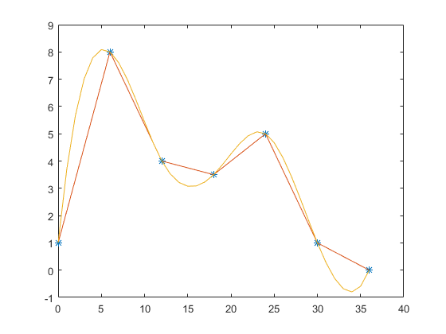

Exercici 3
quadratures amb Matlab \ \ \ $\int_1^2 \ln(x)dx
Contents
Calcular la distància recorreguda
Dades
t = 0:6:36; v = [1 8 4 3.5 5 1 0];
a)
plot(t,v,'*'), hold on % punts plot(t,v), hold on % lineas % enlloc de linies i ja esta fem spline: z = 0:36; sz = spline(t,v,z); plot(z,sz)
b)
distancia per la regla del punt mig
disp('un rectangle') R1 = (t(7)-t(1))*v(4) disp('tres rectangles') R1 = (t(3)-t(1))*v(2)+(t(5)-t(3))*v(4)+(t(7)-t(5))*v(6)
un rectangle R1 = 126 tres rectangles R1 = 150
c)
distancia per la regla dels trapezis
disp('sis trapezis')
T6 = trapz(t,v)
sis trapezis T6 = 132
d)
distància per la fórmula de Simpson
h=t(2)-t(1);
%S3 = h/3*[(v(1)+4*v(2)+v(3))+(v(3)+4*v(4)+v()) ]